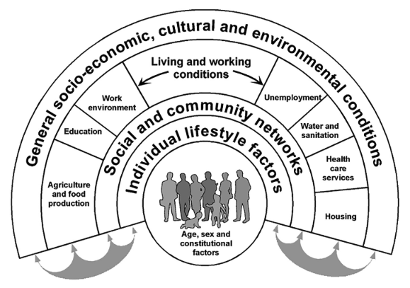
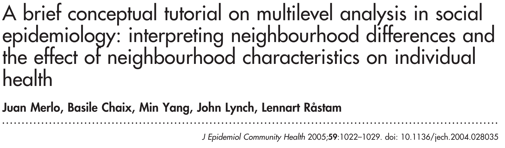
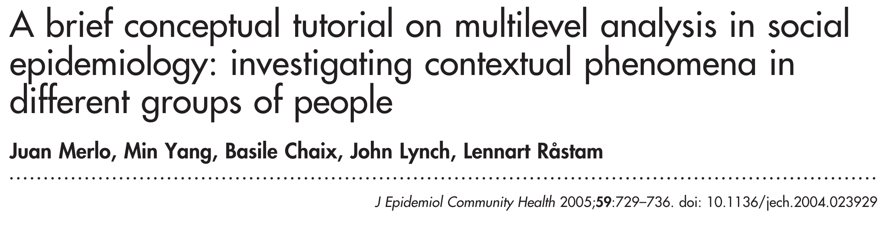

A Quarter Century of Multilevel Models in Social Epidemiology
A Short Story in Three Acts
2024-11-07
- Multilevel methods developed in 1980s in demography (Entwistle), statistics (Wong/Mason), education (Bryk/Raudenbush).
- Critical need for theory.
The development of multi-level approaches in epidemiologic research may facilitate research which elucidates the independent and joint effects of individual and environmental factors on health behaviors and health outcomes.

Epidemiology has lost its way
Social context and ‘population perspective’ has been forgotten.


Multilevel health determinants
Social context a crucial element of conceptual models for ‘social determinants of health’


Early influential studies in social epidemiology

Neighborhood ‘effects’ on violence, mortality
- Focus on mutual adjustment
- Clustering addressed as nuisance
Extended to CVD, low birthweight, other outcomes
- Random effects implementation
- Exploration of multi-level EMM
Focus on ‘simultaneous’ effects:
By incorporating multiple levels of determination in the study of individual outcomes, multilevel analysis allows for the effects of macro- and micro-level variables as well as their interactions
Potential:
Multilevel analysis is one way to begin to restore a population or societal dimension to epidemiologic research

The ‘Big Idea’:
The big idea is that what matters in determining mortality and health in a society is less the overall wealth of that society and more how evenly wealth is distributed.
- Inequality = contextual, but how?





Traditional measures of association such as odds ratios thus provide an incomplete epidemiological basis for decision making in public health interventions.
Fixed effects: No.
Random effects: Yes! 
Neighborhood effects at 20 years
“it is not clear how much we are learning, or whether such lessons are improving population health…experimental evidence of neighborhood effects is mixed, and observational studies too often report mere correlations, side-stepping critical effect identification issues. Since epidemiologists have long known that disadvantaged environments are not healthy, the utility of studies that do not face the difficult methodological challenges is questionable”

Observational data as a neighborhood experiment
Time-varying covariates controlled using IPTW, exposure effects estimated using MSMs.
Can replicate MTO findings.
Found significant lagged effect of living in concentrated disadvantage compared with advantage at wave 1